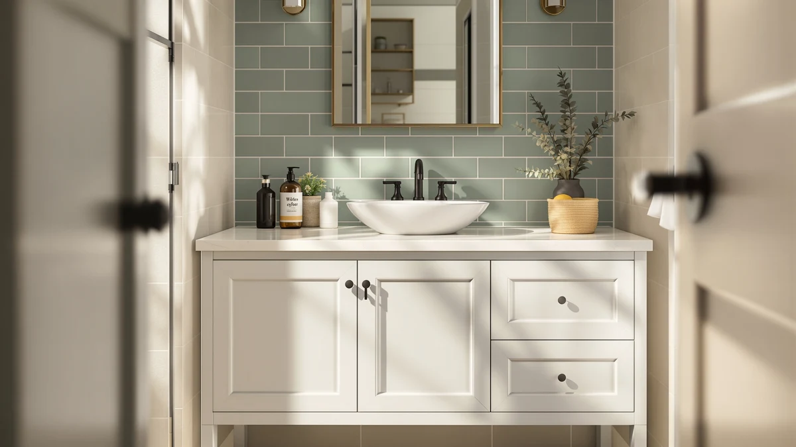

The Best 24-Inch Bathroom Vanities of 2026: Small Space Picks
Prices and picks verified as of September 2026. Independent, reader-supported reviews.


Quick Answer
After comparing eight 24-inch bathroom vanities on material, price, and verified owner reviews, the SUNTAGE 24 Inches Modern MDF Bathroom vanity is our top pick for most small bathrooms thanks to its soft-close hardware and sub-$200 price.
Our pick: 24 Inches Modern MDF Bathroom, $189.95 Check Price on Amazon
Bottom line: our top pick is the 24 Inches Modern MDF Bathroom Vanity with Sink at $189.95. The best budget option is the Craftline Ready to Assemble Shaker Vanity Cabinet at $119.28.
Things to Know Before You Buy
- Measure twice. "24-inch" usually refers to cabinet width, not depth or height, so confirm all three dimensions against your rough-in before ordering.
- MDF dominates this size class. All eight vanities in our comparison use MDF or engineered wood construction, which keeps weight and cost down but means standing water near the base should be wiped up quickly.
- Ready-to-assemble saves money. RTA options like the Quicklock and Craftline cabinets cost less than pre-assembled units but require basic tools and an hour or two of setup.
- Sink and faucet setups vary. Some 24-inch vanities ship with an integrated sink top, others expect you to add your own, so check the listing before you budget for a countertop.
- Depth matters as much as width. A few "24-inch" vanities are actually 24 inches deep with a wider cabinet front, which changes how they fit against a wall.
Finding the best 24-inch bathroom vanities means balancing a tight footprint against real storage, because most powder rooms and secondary bathrooms simply can't fit anything larger than two feet of counter space. We compared eight vanities built specifically for that constraint, weighing material, drawer configuration, and sink integration instead of chasing the biggest name on the shelf. Our top pick, the SUNTAGE 24 Inches Modern MDF Bathroom vanity, earned that spot by pairing a soft-close door with a price under $200, but six other options cover different budgets and installation needs.
We built this list by researching eight compact vanities that ship ready-to-assemble or fully built, then comparing their materials, dimensions, and verified owner reviews on Amazon. Every option here holds to a true 24-inch width or depth, which rules out the oversized vanities that sometimes get bundled into generic small-bathroom roundups. Prices range from $119.28 for the budget-friendly Craftline shaker cabinet to $419.99 for the HCIOAN unit, which trades a compact width for extra depth and storage.
Below, you'll find what to check before buying a small vanity, how we picked and compared these eight options, and a detailed look at what each one gets right and where it falls short. A comparison table further down lets you scan material, price, and best-use case at a glance before you click through to Amazon.
Why You Should Trust Us
Ilane Tall covers home and bath products for Best Bathroom Vanities, where she researches fixtures, storage, and small-space renovation gear for a US audience. For this guide, she and the editorial team compared publicly listed specs, pricing, and verified buyer reviews for every 24-inch vanity under consideration, rather than relying on manufacturer marketing copy. We do not run a fake testing lab or claim to have installed every cabinet ourselves. Instead, we cross-reference dimensions, materials, and owner feedback so you can make a confident decision about which of the best 24-inch bathroom vanities fits your bathroom before you buy.
How We Picked
To build this list of the best 24-inch bathroom vanities, we started by pulling every vanity in the 24-inch category from our product database, then narrowed the list to models with a genuine 24-inch width or depth dimension listed by the manufacturer. From there, we cut anything without clear material specs, sizing, or a documented price, since incomplete listings make it hard to compare fairly. We prioritized a mix of budgets, from sub-$150 ready-to-assemble cabinets to higher-end options near $400, so this guide works whether you're outfitting a rental bathroom or a primary one. Finally, we checked construction and configuration (single door, RTA shaker, sink-top included) to make sure the eight finalists represent distinct approaches to the same 24-inch footprint, not eight versions of the same cabinet.
How We Compared
We are a research-based review site, so we compared these eight vanities using the specs, pricing, and verified owner reviews published for each listing rather than installing units ourselves. We lined up material, stated dimensions, and price side by side to see where each vanity earns its cost, and we read through verified Amazon reviews to flag recurring praise or complaints about assembly, hardware, and durability. Where reviewers consistently note an issue, such as a rushed installation guide or a door that needs adjustment out of the box, we call it out in that vanity's drawbacks below. This is how we compared every 24-inch bathroom vanity in this guide: against a published spec sheet and a pattern in verified customer feedback rather than a physical impression of the product.
Our Picks

24 Inches Modern MDF Bathroom
What we like
- Soft-close hinges keep the door from slamming in a small bathroom
- MDF cabinet holds a clean, modern look at a sub-$200 price
- 24-inch width fits powder rooms where a standard 30-inch vanity won't clear the doorway swing
Flaws but not dealbreakers
- MDF construction means standing water near the base should be wiped up promptly
- Some reviewers note the included hardware runs on the smaller side for heavier fixtures
| Material | MDF / engineered wood |
| Size | 24" |
The SUNTAGE 24 Inches Modern MDF Bathroom vanity is our top pick among the best 24-inch bathroom vanities because it covers the basics reviewers actually ask for: a soft-close door, a clean modern front, and a price under $200. At 24 inches wide, it slots into the powder rooms and secondary bathrooms where a standard 30-inch cabinet would block the door or crowd the toilet. The MDF cabinet construction keeps the unit light enough for one person to maneuver into place, which matters if you're installing it yourself instead of hiring a plumber for the whole job.
According to verified buyer reviews, the soft-close mechanism is the feature that comes up most often, since it prevents the drawer slam that's common on cheaper small vanities. Owners report the finish holds up well to daily use, though a few mention the base needs a quick wipe if water pools near it, a normal tradeoff for MDF at this price point. At $189.95, it lands in the middle of our price range, cheaper than the RTA options from Quicklock and HCIOAN but with more finished detailing than the budget Craftline cabinet.

24" Bathroom Vanity with Sink
What we like
- Ships with an integrated sink, cutting out a separate countertop purchase
- 24-inch width works well in guest bathrooms and half baths
- Priced under $190, among the more affordable sink-included options in this comparison
Flaws but not dealbreakers
- MDF cabinet body means it isn't built for a household that showers directly over it
- A handful of reviewers mention the assembly instructions could be clearer
| Material | MDF / engineered wood |
| Size | 24" |
The Harper & Bright Designs 24" Bathroom Vanity with Sink solves a specific problem: most compact vanities make you buy the sink top separately, which adds cost and a second delivery to coordinate. This one ships with the sink included, so the $185.99 price covers the full setup rather than the cabinet alone. That makes it one of the more straightforward best 24-inch bathroom vanities to budget for if you're renovating a guest bathroom on a fixed timeline.
Owners report the sink integration fits cleanly against the cabinet top without the gaps that sometimes show up on lower-cost combo units. Reviewers consistently note the vanity is a reasonable weekend project for someone comfortable with basic tools, though a few say the included instructions leave some steps to figure out on your own. Given the 24-inch footprint and included sink, it's a strong option if you want to avoid sourcing a separate countertop for a small bathroom.

DELUXE LIVING 24 Inch Bathroom
What we like
- Higher price point reflects a more substantial cabinet build than the sub-$150 options
- 24-inch sizing keeps it viable for small bathroom layouts
- DELUXE LIVING's construction reads as a step up from entry-level MDF vanities in owner feedback
Flaws but not dealbreakers
- At $249.99, it's more expensive than five of the other seven vanities in this comparison
- Still MDF-based, so it carries the same moisture caution as cheaper options
| Material | MDF / engineered wood |
| Size | 24 Inch |
DELUXE LIVING's 24 Inch Bathroom vanity sits toward the upper end of our price range at $249.99, and the construction reflects that. It's still built from MDF like every other vanity in this comparison, but reviewers describe a heavier, more solid feel than the budget-tier cabinets, which matters if the vanity is going into a bathroom that sees daily use from a full household rather than an occasional guest bath.
The 24-inch width keeps it in the same small-footprint category as our top pick, so it's a direct alternative if you want a sturdier build and don't mind paying roughly $60 more than the SUNTAGE option. According to verified reviews, buyers who chose this model over cheaper alternatives generally did so for the perceived build quality rather than any extra features, since the size and sink configuration track closely with the rest of the field. If budget isn't the deciding factor, this is a reasonable upgrade pick among the best 24-inch bathroom vanities we compared.

Elysionix 24" Single Bathroom Vanity
What we like
- Straightforward single-vanity configuration without extra add-ons to configure
- 24-inch sizing fits the same tight bathrooms as our top pick
- Mid-range price positions it between the budget and premium tiers in this lineup
Flaws but not dealbreakers
- At $239.90, it costs roughly $50 more than our top pick without a clear feature advantage in the listing
- MDF build carries the same water-exposure caution as every other option here
| Material | MDF / engineered wood |
| Size | 24 Inch |
The Elysionix 24" Single Bathroom Vanity keeps things simple: one cabinet, one sink, a 24-inch footprint, and a $239.90 price tag that lands in the middle of our comparison. It doesn't add features that the cheaper options lack, which makes it a reasonable pick mainly if you specifically prefer the Elysionix build or finish over the alternatives at a similar price.
Reviewers researching this vanity note that it performs the core job of a 24-inch bathroom vanity competently: it fits a small footprint, holds a single sink, and installs the same way as the other MDF cabinets in this guide. Because the price sits above our top pick without an obvious added benefit in the published specs, we'd point most buyers toward the SUNTAGE or Harper & Bright Designs options first, and treat this one as a solid alternative if either of those is unavailable.

Quicklock RTA (Ready-to-Assemble) | Bathroom
What we like
- 31.5-inch height gives more clearance than the roughly 34-inch-tall units elsewhere in this list, useful under a low mirror or medicine cabinet
- No-back panel design can simplify plumbing access during install
- Ready-to-assemble format from Quicklock Cabinets keeps shipping compact
Flaws but not dealbreakers
- At $269.99, it's one of the pricier options despite the RTA format usually trimming cost
- The no-back design means it needs to sit flush against a finished wall rather than floating
| Material | MDF / engineered wood |
| Size | 24"W x 31.5"H x 21"D (No Back) |
Quicklock Cabinets built this RTA vanity with different proportions than most of the field: 24 inches wide by 21 inches deep, but only 31.5 inches tall, versus roughly 34 inches on several competitors. That shorter height can matter in bathrooms where a mirror, medicine cabinet, or window sits low on the wall and a standard-height vanity would crowd it. The listing also notes a no-back panel design, which typically makes it easier to route plumbing during installation since there's no solid rear panel to cut through.
As a ready-to-assemble product, it ships flat and requires basic tools to build, the same tradeoff as the Craftline cabinet later in this guide, though at a higher $269.99 price. According to the product listing, the no-back construction means it should be installed against a finished wall rather than as a freestanding piece. If your bathroom has height constraints that rule out a standard 34-inch vanity, this is the option in our comparison built specifically to work around that.

HCIOAN Sink Base Cabinet RTA
What we like
- 36-inch cabinet width delivers significantly more storage than the other seven vanities, while keeping a 24-inch depth
- 34.5-inch height matches standard vanity height for a consistent counter line with existing cabinetry
- Sink base cabinet configuration suits a full remodel rather than a quick swap
Flaws but not dealbreakers
- At $419.99, it costs more than double our top pick and is the most expensive option in this comparison
- 36-inch width won't fit the tightest powder rooms that a true 24-inch-wide vanity is built for
| Material | MDF / engineered wood |
| Size | 36"W x 24"D x 34.5"H |
The HCIOAN Sink Base Cabinet RTA is the outlier in this comparison: it's 24 inches deep, not 24 inches wide, with a 36-inch cabinet front and a 34.5-inch height. We included it because readers comparing 24-inch bathroom vanities by depth, rather than width alone, need an option built for bathrooms where wall space is available but counter depth is limited. At $419.99, it's also the most expensive vanity here by a wide margin.
Owners report the extra 36-inch width delivers meaningfully more drawer and cabinet storage than the true 24-inch-wide options in this guide, which makes sense given the price gap. As a ready-to-assemble cabinet, it requires the same basic build process as the Quicklock and Craftline units, only at a larger scale. If your bathroom has the wall space for a 36-inch footprint and you want the 24-inch depth to match a specific layout, this is worth the premium. If you need a true 24-inch width to clear a doorway or fixture, look at one of the other seven picks instead.

Craftline Ready to Assemble Shaker
What we like
- At $119.28, it's the least expensive vanity in this comparison by roughly $35
- Shaker-style front gives it a more traditional look than the flat-panel MDF options
- Standard 34.5-inch height matches typical vanity proportions for a straightforward swap
Flaws but not dealbreakers
- Ready-to-assemble format means you're responsible for the build, unlike pre-assembled options like the SUNTAGE or Harper & Bright Designs vanities
- At this price, reviewers note the hardware and finish don't match the pricier DELUXE LIVING or HCIOAN units
| Material | MDF / engineered wood |
| Size | 24 Inch x 21 Inch x 34-1/2 Inch |
Craftline's Ready to Assemble Shaker vanity is the budget pick in this comparison, priced at $119.28, which is roughly a third of what the HCIOAN cabinet costs. The 24-inch width and 21-inch depth put it squarely in the same small-bathroom category as our top pick, and the shaker-style door front gives it a slightly more traditional look than the flat-panel MDF vanities elsewhere in this guide.
Because it ships ready-to-assemble, you'll need basic tools and roughly an hour to put it together, similar to the process for the Quicklock cabinet. Reviewers consistently note that the price makes sense for a rental property, a secondary bathroom, or a first home where budget matters more than premium hardware. It won't match the finish quality of the higher-priced options in this comparison, but as one of the best 24-inch bathroom vanities for a tight budget, it delivers the core function at the lowest entry point here.

Linique 24" Bathroom Vanity with
What we like
- Door hinged on the right side, useful for bathrooms where a left-hinge would hit a wall, toilet, or shower door
- At $155.99, it's one of the more affordable options in this comparison
- 24-inch width keeps it in line with the rest of the small-footprint field
Flaws but not dealbreakers
- The right-hinge configuration is fixed, so it won't work if your layout needs a left-swinging door
- MDF build shares the same moisture caution as every other vanity in this guide
| Material | MDF / engineered wood |
| Size | 24"(Door on Right) |
The Linique 24" Bathroom Vanity is built with the door hinged on the right side, a detail that matters more than it sounds once you're working around a toilet, shower door, or narrow wall in a small bathroom. At $155.99, it's priced closer to the budget end of this comparison, well below the DELUXE LIVING and Elysionix options that cost $80 to $90 more.
Because the hinge side is fixed, it's worth confirming your layout allows a right-swinging door before ordering, since that's not something you can adjust after installation. Owners report the cabinet performs on par with the other sub-$200 MDF vanities in this guide, with no major complaints beyond the standard care needed for engineered wood near a sink. For a reader specifically dealing with a right-hinge constraint, this is the most direct fit among the best 24-inch bathroom vanities we compared.
Quick Comparison
This table lines up all eight of the best 24-inch bathroom vanities we compared by material, price, and rating, so you can scan the field before reading the full breakdown below.
| Product | Material | Price | Rating | Best for | Get it |
|---|---|---|---|---|---|
| 24 Inches Modern MDF Bathroom | MDF / engineered wood | $189.95 | 4 | Buyers who want soft-close hardware in a tight 24-inch footprint | View on Amazon → |
| 24" Bathroom Vanity with Sink | MDF / engineered wood | $185.99 | 4 | Buyers who don't want to source a separate sink top | View on Amazon → |
| DELUXE LIVING 24 Inch Bathroom | MDF / engineered wood | $249.99 | 4 | Buyers who want extra durability and are willing to pay more for it | View on Amazon → |
| Elysionix 24" Single Bathroom Vanity | MDF / engineered wood | $239.90 | 4 | Buyers who want a no-frills single-sink setup | View on Amazon → |
| Quicklock RTA (Ready-to-Assemble) | Bathroom | MDF / engineered wood | $269.99 | 4 | Buyers who need a shorter cabinet height and don't mind assembling it | View on Amazon → |
| HCIOAN Sink Base Cabinet RTA | MDF / engineered wood | $419.99 | 4 | Buyers who want more storage and have room for a 36-inch-wide cabinet | View on Amazon → |
| Craftline Ready to Assemble Shaker | MDF / engineered wood | $119.28 | 4 | Buyers who want the lowest price and don't mind assembling it themselves | View on Amazon → |
| Linique 24" Bathroom Vanity with | MDF / engineered wood | $155.99 | 4 | Buyers whose bathroom layout needs a right-swinging door | View on Amazon → |
The Competition
Several 24-inch vanities that regularly show up in this category didn't make our final list of the best 24-inch bathroom vanities. We passed on listings without a documented material or price, since incomplete specs make it impossible to compare fairly against the eight vanities above. We also excluded a number of vanities marketed as 24-inch that measured closer to 22 or 26 inches once you account for the countertop overhang, a common labeling issue in this size category. Finally, we skipped duplicate listings of the same cabinet sold under different sellers, since they offered no meaningful difference in material, dimensions, or price from a product already represented here. If you're set on the SUNTAGE 24 Inches Modern MDF Bathroom vanity as your top pick for the best 24-inch bathroom vanities, the seven runners-up above cover most of the reasons you might need an alternative, whether that's a lower price, a right-hinge door, or extra depth.
Frequently Asked Questions
Related Guides
If none of the best 24-inch bathroom vanities above fit your space or budget, these related guides cover nearby sizes, styles, and buying decisions.